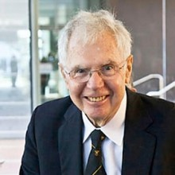

Please note: the AAS Obituaries are temporarily being hosted on this website while their full content is being ingested into the PubPub publishing platform newly adopted by the Bulletin of the American Astronomical Society. When the migration is complete, your existing links will take you to the final, migrated content. Contact peter.williams@aas.org with any questions.
John A. Graham (1939-2018)
Carnegie Institution for Science astronomer John A. Graham, whose observational research spanned a wide range of galactic and extragalactic subjects, died at home in Washington, D.C., on 13 September 2018, after a battle with brain cancer. He was 79.
Born in Sydney, Australia, on 28 July 1939, Graham’s passion for astronomy began at age 6. "With my father's help, I made a small telescope with spectacle lenses,” he recalled. “And it worked: I could see the craters on the moon. That was the most exciting thing of all. One never forgets that.” Graham went on to receive his B.Sc. in Physics with honors in 1961 from the University of Sydney, Australia, and his Ph.D. in astronomy in 1964 from the Australian National University, Canberra. He was subsequently associated with Leiden Observatory in Holland and its southern observing station in South Africa, from 1964 to 1965; Kitt Peak National Observatory, Tucson, Arizona, from 1966 to 1968; Cerro Tololo Inter-American Observatory (CTIO), Chile, from 1968 to 1985; and finally the Carnegie Institution’s Department of Terrestrial Magnetism (DTM), Washington, D.C., from 1985 to 2002.
Graham's research interests included galactic and extragalactic astronomy, variable stars, and star formation in the Milky Way and its neighboring galaxies. Although his work at DTM focused on young stars, before arriving at Carnegie he observed old stars in the Milky Way and Magellanic Clouds. Graham’s 1979 Astrophysical Journal paper on the structure and evolution of the radio galaxy NGC 5128, or Centaurus A, is still cited today. Often described as a consummate team player, he worked to establish a widely used network of UBVRI photometric standard stars and was also part of the Hubble Space Telescope Key Project team to determine the extragalactic distance scale and the Hubble constant.
“John was a passionate observer with very broad scientific interests,” said François Schweizer, Carnegie astronomer emeritus and longtime colleague of Graham’s at both CTIO and DTM. “But perhaps best of all, one could discuss with him any subject in astronomy and learn from his well-informed opinions. Such discussions were always permeated by his sense of humor and, hence, most enjoyable.”
In addition to his own research, Graham was an enthusiastic participant in the larger astronomy community. He was Vice President of the AAS between 1984 and 1986 and, after his retirement from DTM, served again as AAS Secretary from 2003 to 2009. He was part of the AAS Shapley Visiting Lectureship Program from 1987 to 1994. A longtime member of the Astronomical Society of the Pacific, Graham served on the Board of Directors and chaired the ASP’s editorial board from 1988 to 1991. He spent a year as the Program Director of Stellar Astronomy and Astrophysics at the National Science Foundation’s Division of Astronomical Sciences from 2000 to 2001. During his career, he also served in numerous official positions within commissions and divisions of the IAU.
“John was a formal, quiet, generous, gentleman,” said DTM Director Richard Carlson. “It was an honor to have known and worked with someone who contributed so much to Carnegie and to his field.”
The HAD is grateful to Richard W. Carlson, Director, Department of Terrestrial Magnetism, Carnegie Institution for Science, for permission to include in this obituary portions of a memorial essay posted at Carnegie’s web site:
https://carnegiescience.edu/news/john-graham-expert-young-stars-dead-79
Photo: Carnegie Institution for Science
Obituary written by: Alan Hirshfeld (UMass Darthmouth)
BAAS Citation: BAAS, 2018, 50, 029